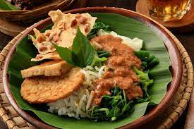
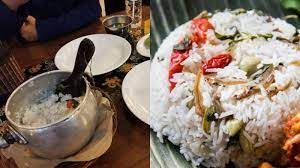
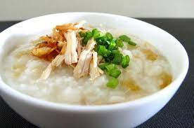
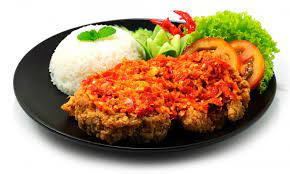

Soto ayam adalah makanan khas Indonesia yang berupa sejenis sup ayam dengan kuah yang berwarna kekuningan. Warna kuning ini dikarenakan oleh kunyit yang digunakan sebagai bumbu. Soto ayam banyak ditemukan di daerah-daerah di Indonesia

Pecel Indonesia
Masakan Pecel
Makanan dengan bumbu kacang
Pecel merupakan makanan berasal dari pulau jawa makanan ini biasanya disajikan dengan bumbu kacang dan sayuran
Nasi Kuning
Nasi Kuning
Makanan Nasi Kuning
Nasi kuning adalah makanan khas Indonesia. Makanan ini terbuat dari beras yang dimasak bersama dengan kunyit serta santan dan rempah-rempah. Dengan ditambahkannya bumbu-bumbu dan santan, nasi kuning memiliki rasa yang lebih gurih daripada nasi putih
Nasi Campur
Nasi Campur
Makanan Nasi Campur
Nasi campur adalah masakan khas Indonesia. Makanan ini terdiri dari nasi putih yang dihidangkan dengan bermacam-macam lauk-pauk. Lauk yang digunakan adalah sambal goreng, abon, serundeng, tahu goreng, ikan goreng, telur dan lain-lain.

Nasi Bekepor
Nasi Bekepor
Mananan Bekepor
nasi bekepor merupakan warisan dari Kerajaan Kutai Kartanegara. Nasi tersebut hanya dihidangkan untuk anggota keluarga kerajaan saja.
Nasi Rawon
Nasi Rawon
Makanan Berkuah
Rawon adalah masakan Indonesia berupa sup daging berkuah hitam dengan campuran bumbu khas yang menggunakan kluwek. Rawon, meskipun dikenal sebagai masakan khas Jawa Timur, dikenal pula oleh masyarakat Jawa Tengah sebelah timur.

Bubur Mahasiswa
Bubur
Makanan Pagi Mahasiswa
Bubur ayam adalah salah satu jenis makanan bubur dari Indonesia. Bubur nasi adalah beras yang dimasak dengan air yang banyak sehingga memiliki tekstur yang lembut dan berair. Bubur biasanya disajikan dalam suhu panas atau hangat

Ayam Geprek
Ayam Geprek
Ayam Pedas
yam geprek adalah makanan ayam goreng tepung khas Indonesia yang diulek atau dilumatkan bersama sambal bajak. Kini ayam geprek telah menjadi hidangan populer yang dapat ditemukan di hampir semua kota besar di Indonesia, tetapi asal mula ayam geprek berasal dari kota Yogyakarta.
Kontak
Wkwkwk Resto
Hanya Tersedia di Universitas Merdeka Malang
Falkutas Teknologi Informasi
GoFood : Resto Wkwkwk
ShopeFood : Wkwkwk Resto
cp : +6283850164955
Email : wkwkwkresto@ran.id